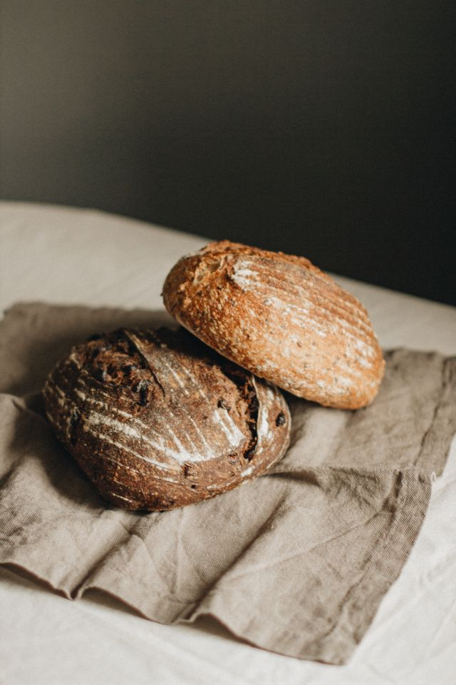
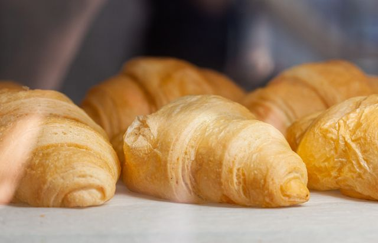

Every bake day
Country sourdough
Wheat, a little wholegrain rye, water and salt. Our everyday loaf.
€6.50 / 800 gYour neighbourhood bakehouse
A dark crust, a soft middle, and something warm to take home. We make sourdough and pastry on Mill Street, Wednesday to Sunday.
Coffee from opening. First loaves at 7:30 (8 on Sunday).

On the counter
Wheat, a little wholegrain rye, water and salt. Our everyday loaf.
€6.50 / 800 g
Made over three days. Best eaten over a plate, for the crumbs.
€2.60 each
A look at our starter, the overnight proof, and the next morning’s bake.
Read our notes →This week
Our seeded rye is on the counter again, alongside rosemary focaccia and the cardamom buns. The crème brûlée tart is staying for another week, too.
Come before nine for the widest choice. After that, there’s usually still a loaf and a coffee to be had.
Find your morning order